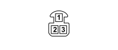

M095 Sun roof control unit (REAR)
- Path
- Electrical equipment > 3 CONNECTORS > M INTERMITTENT AND TIMED ELECTRONIC DEVICES > M095 Sun roof control unit > M095 Sun roof control unit (REAR)
- Kind
- connector pinout (pin -> wire colour -> other end)
- Applies to
- all engines; all production periods
- Interactive page
- https://sloeber94.github.io/elrnDB-fPnd/en/#/169003475
Applies to: all engines; all production periods

Wiring | Colour |
|---|---|
NERO (black) |
Pin | Cable | Destination | |||
|---|---|---|---|---|---|
Sec.. | Colour | Node | Connect. | Pin | |
1 | 0,5 | RV (red with green stripe) | 3 | ||
2 | 1,5 | AB (light blue with white stripe) | 1 | ||
3 | 1,5 | N (black) | 6 | ||